The parts every task tool needs, decided once.
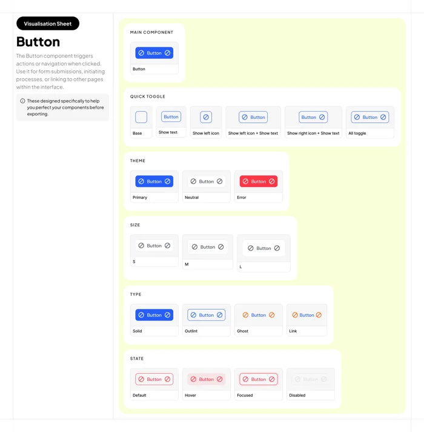
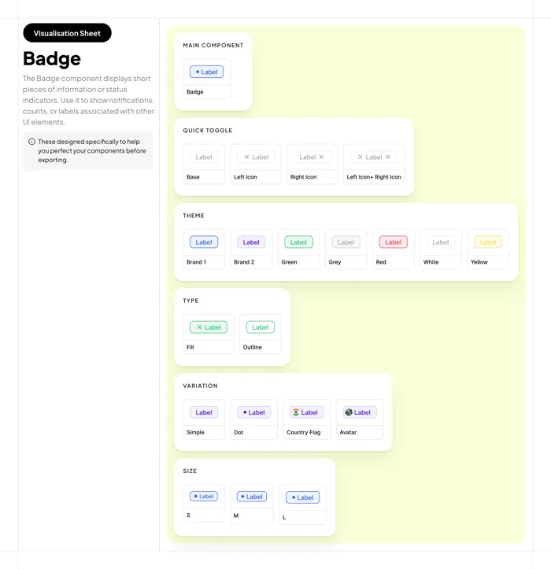
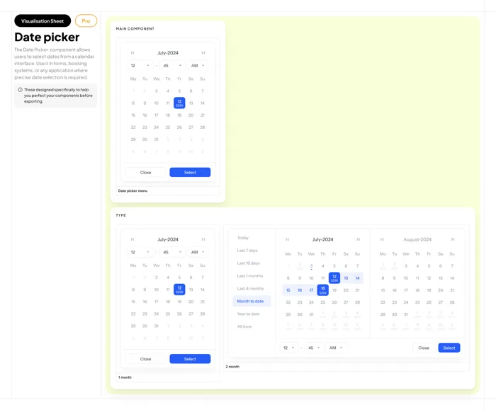
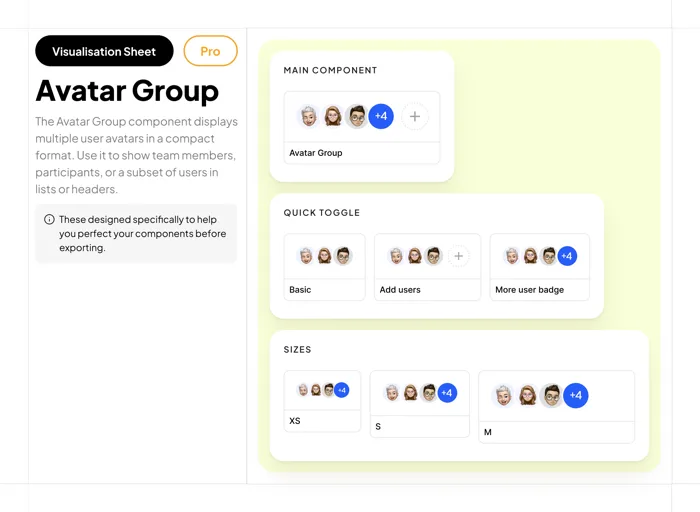
Strip a task app down and you keep meeting the same questions: what state is it in, who's on it, when is it due, what's attached, what can I do, and where am I?
TasQ answers each one with a component. Here they are working together on a single task card, built from the system's own tokens.
My reading of the component setThe task card above is an illustration I composed for this page. It isn't a screen from a shipped product.
TasQ uses one family, Inter: bold for seven heading levels, regular and medium for five body sizes. Every step follows the same rule, so nobody has to look up a line height.
The specimens above are set live in Inter at TasQ's sizes, scaled down on small screens. The numbers on the right are the real tokens.
Each family runs from 100 to 500, plus a 10% tint for backgrounds behind badges and selections. Blue is the brand, teal the accent, and red, yellow and green carry feedback. Two colours are reserved for chat bubbles: send and receive.
Click any swatch to copy its hex value.
Each component lives on a visualisation sheet with a fixed running order. Once you've read one, you know where to find the sizes or the disabled state on any other.
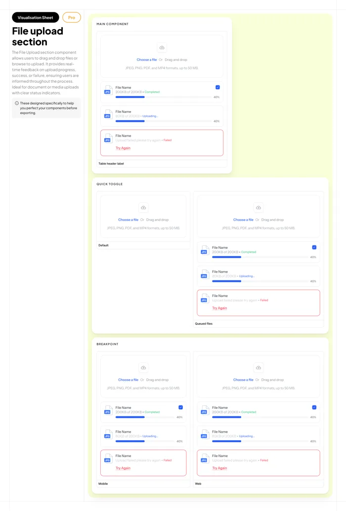
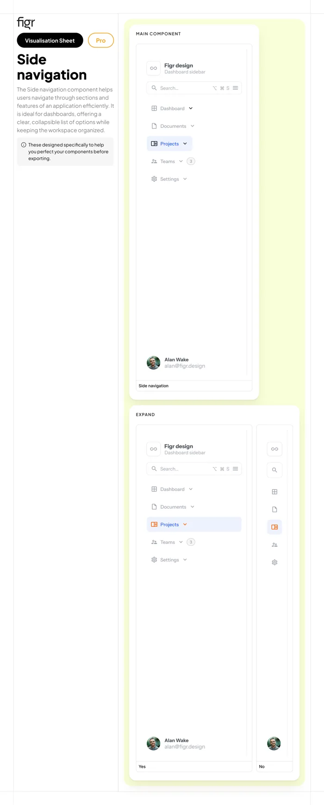
The button sheet shows a grid of variants. Here's the same component rebuilt with TasQ's colours, so you can flip through them yourself.
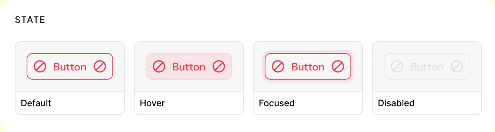
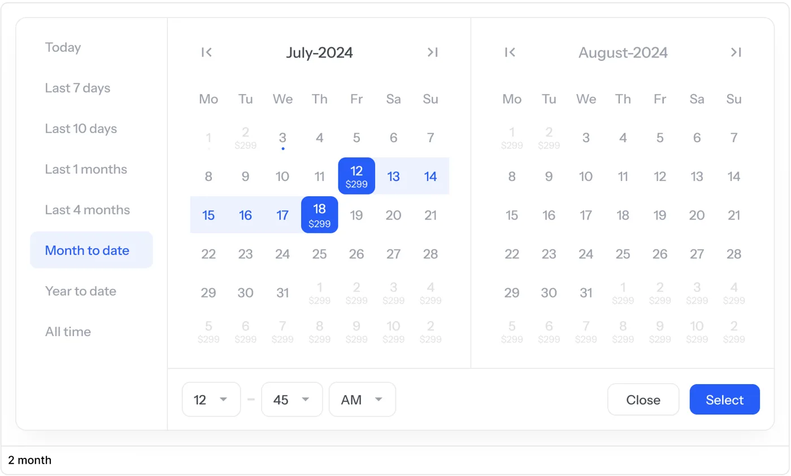
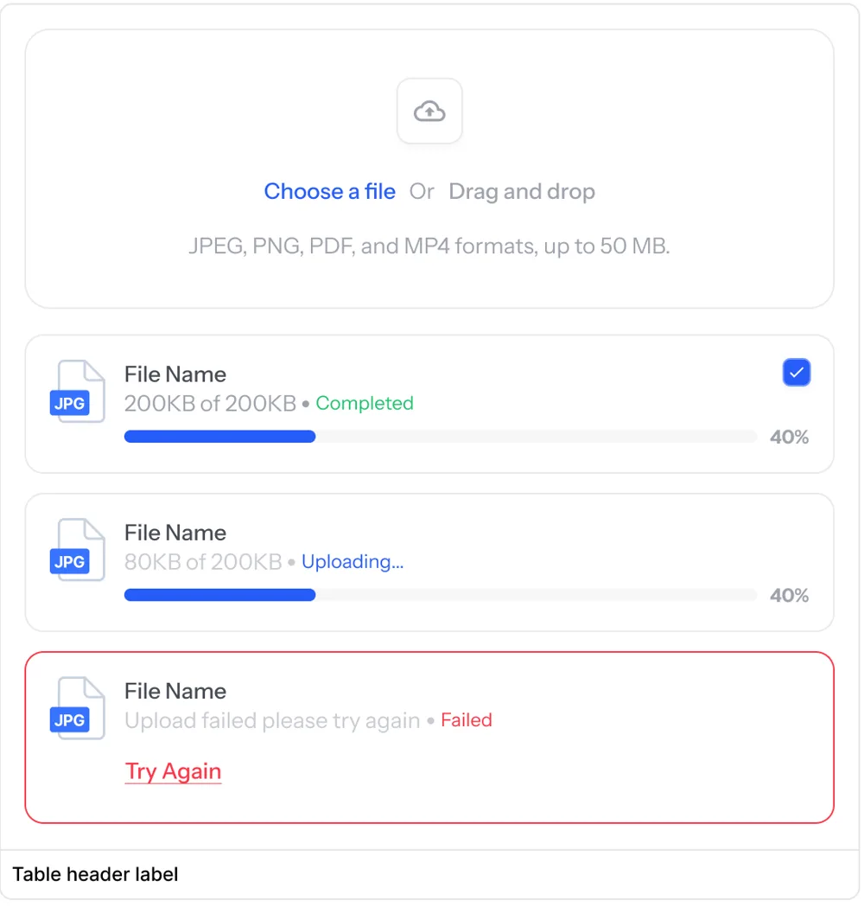
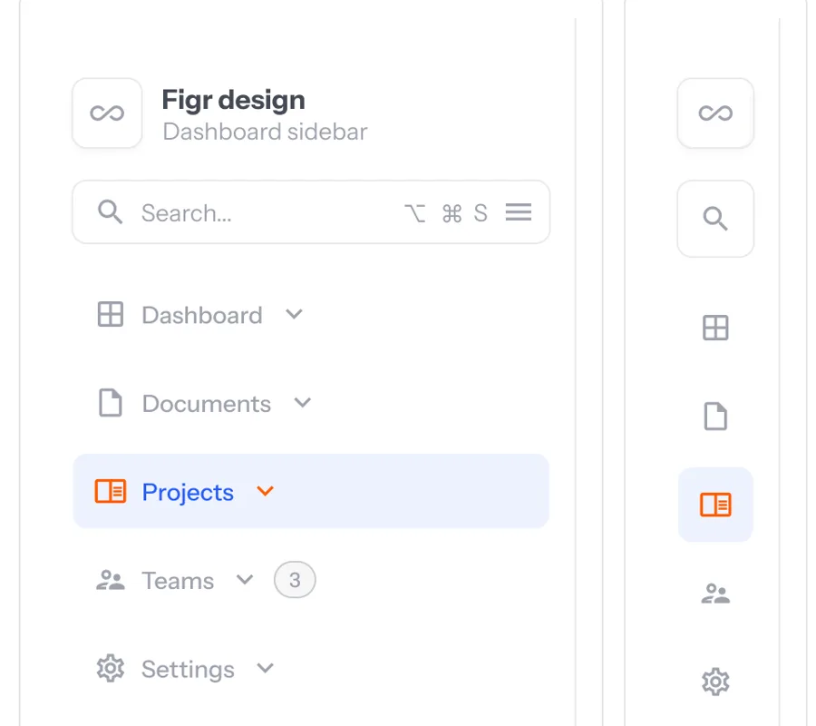
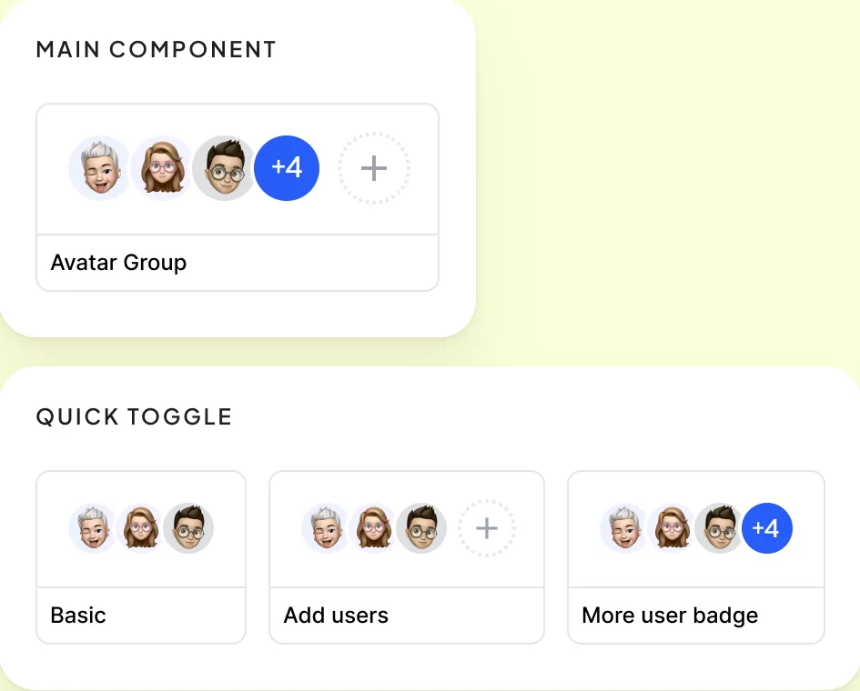
The foundation is in place: one type rule, ramps that read clearly, and sheets that all follow the same order. These are the gaps I'd close next.